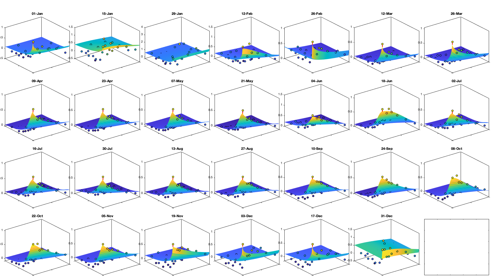

Contents
- Inference of the daily and intra-night model of flight speed.
- ---------- PART 1
- Load data
- Assess missing value and remove un-reliable data
- Figure of data kept
- Check speed norm with year and month.
- 2D Grubb's test to removal outliar
- Outliar intra-night: NOT USED
- Export daily and intra-night in u and v
- Save
- ---------- PART 2:
- Step 1: Mean
- Step 2: Variance
- Save
- ---------- PART 3
- Fit covariance function
- save
- ---------- PART 4
- Transformation
- Detrend Mean
- Detrend Variance
- Covariance
- save
Inference of the daily and intra-night model of flight speed.
plotit=true;
---------- PART 1
Load data and filter/clean
Load data
cd('/Users/raphael/Library/CloudStorage/Box-Box/BMM-US/') set(0, 'DefaultAxesBox', 'on'); addpath(genpath('functions')) % load grid and radar information from density (need to be run first) load('data/density/inference-trans','radar','g','thr_nnt') uv = {'u','v'}; % Read vid % vid = readmatrix('data/vid.csv','NumHeaderLines',1,'TreatAsMissing' ,'NA'); vi.v = readmatrix('data/viv.csv','NumHeaderLines',1,'TreatAsMissing' ,'NA'); vi.u = readmatrix('data/viu.csv','NumHeaderLines',1,'TreatAsMissing' ,'NA'); %viav = readmatrix('data/viav.csv','NumHeaderLines',1,'TreatAsMissing' ,'NA'); %viau = readmatrix('data/viau.csv','NumHeaderLines',1,'TreatAsMissing' ,'NA'); % NNT (nornmalized night time) NNT = twilightNNT(g.time, radar.lon, radar.lat); NNT(NNT<thr_nnt(1)|NNT>thr_nnt(2))=nan; % load the clenned density to filter out untrusted datapoint. load('data/density/inference-trans.mat','vidTS','trans','vidTS_id') vid = trans.f_inv(vidTS);
Assess missing value and remove un-reliable data
numel(vi.v) % 138M datapoint sum(~isnan(NNT(:))) % 62M during the night sum(~isnan(NNT(:))&~isnan(vi.v(:))) % 48M during the night with data % There is sum(~isnan(NNT(:))&sqrt(vi.u(:).^2+vi.v(:).^2)>=.1) % 44M during the night with speed above .1 m/s and density % Speed where the density is less than 2 bird/km^2 seems to be quite off, % particularly in the winter. A threahodl of 5 would remove a lot of % datapoint... not obvious threadhold. See figure below sum(~isnan(NNT(:))&sqrt(vi.u(:).^2+vi.v(:).^2)>=.1& vid(:)>10) % 11M during the night with speed above .1 m/s and density above 10 bird/km^2 % keep a copy for figure comparison vi0=vi; % ignore data if less than trans.thr_T bird/km^2, or if average speed is less than .1 id = ~vidTS_id| sqrt(vi.u.^2+vi.v.^2)<.1; vi.v(id)=nan; vi.u(id)=nan; % Compute the angle and norm of the speed vectors via = angle(vi.u + vi.v*1i); vin = abs(vi.u + vi.v*1i);
ans =
138225792
ans =
62671438
ans =
48545188
ans =
44424831
ans =
11242996
Figure of data kept
if plotit A=splitapply(@(x) mean(x,'all','omitnan'),vi.v,g.time_doy); B=splitapply(@(x) std(x,[],'all','omitnan'),vi.v,g.time_doy); C=splitapply(@(x) sum(~isnan(x(:))),vi.v,g.time_doy); A0=splitapply(@(x) mean(x,'all','omitnan'),vi0.v,g.time_doy); B0=splitapply(@(x) std(x,[],'all','omitnan'),vi0.v,g.time_doy); C0=splitapply(@(x) sum(~isnan(x(:))),vi0.v,g.time_doy); figure; tiledlayout('flow','TileSpacing','tight','Padding','tight') nexttile; hold on; plot(A0,'-k'); plot(A0+B0,'--k'); plot(A0-B0,'--k'); plot(A,'-r'); plot(A+B,'--r'); plot(A-B,'--r'); ylim([-15 15]); ylabel('V (north/sout) [m/s]'); xlabel('Day of year'); axis tight; nexttile; hold on; plot(C0,'k'); plot(C,'r'); xlabel('Day of year'); ylabel('Number of datapoint'); axis tight; figure('position',[0 0 900 600]); tiledlayout(2,2,'TileSpacing','tight','Padding','tight') nexttile; histogram((vi.v(:))); legend('v (North/South)'); axis tight; nexttile; histogram(vi.u(:)); legend('u (East/West)'); axis tight; nexttile; histogram((via(:))); legend('angle'); axis tight; nexttile; histogram(vin(:)); legend('norm'); axis tight; % Relationship density speed vin0 = abs(vi0.u + vi0.v*1i); figure('position',[0 0 900 600]); tiledlayout('flow','TileSpacing','tight','Padding','tight') for i_m=1:12 id=month(g.time)==i_m; nexttile; id2= id & vidTS<20; plot(vin0(id2),vidTS(id2),'.k'); hold on; plot(vin(id2),vidTS(id2),'.r') l=lsline; l(1).Color='k'; l(1).Color='r'; yline(trans.thr_T,'--r') end figure('position',[0 0 1900 900]); tiledlayout('flow','TileSpacing','tight','Padding','tight') for i_m=1:24 nexttile; if i_m<13 tmp = vi0; title(['old-' datestr(i_m*30,'mmm')]) else i_m=i_m-12; title(['new-' datestr(i_m*30,'mmm')]) tmp=vi; end tmp2=sqrt(tmp.u.^2+ tmp.v.^2); id=month(g.time)==i_m; borders('states','k'); scatter(radar.lon,radar.lat,70,nanmean(tmp2(id,:)),'o','filled','MarkerEdgeColor','k'); quiver(radar.lon,radar.lat,nanmean(tmp.u(id,:))',nanmean(tmp.v(id,:))','k') axis equal; axis([-125 -68 23 50]); set(gca,'ydir','normal'); xticks([]); yticks([]); caxis([0 15]) % title(num2str(sum(sum(tmp2(id,:)>0)))) end end
Check speed norm with year and month.
if plotit figure('position',[0 0 900 675]);tiledlayout('flow','TileSpacing','tight','Padding','tight') col = crameri('batlow',12); for i_y=1995:2021 nexttile; % histogram(vin(year(g.time)==i_y,:)) hold on; for i_m=1:2:11 [N,edges] = histcounts(vin(year(g.time)==i_y&(month(g.time)==i_m|month(g.time)==(i_m+1)),:)); plot(edges(1:end-1),N,'color',col(i_m,:)) end [N,edges] = histcounts(vin(year(g.time)==i_y,:)); plot(edges(1:end-1),N/6,'-k','linewidth',2) xlim([0 50]) title(i_y) if i_y==2000 legend({'jan-fev','mar-apr','may-jun','jul-aug','sep-oct','nov-dec','all-year'}) end end end
2D Grubb's test to removal outliar
viuv_m=nan(2,366); viuv_s=nan(2,366); viuv_n=nan(1,366); for i_d=1:366 viuv_m(:,i_d) = [mean(vi.u(g.time_doy==i_d,:),'all','omitnan') mean(vi.v(g.time_doy==i_d,:),'all','omitnan')]; viuv_s(:,i_d) = [std(vi.u(g.time_doy==i_d,:),[],'all','omitnan') std(vi.v(g.time_doy==i_d,:),[],'all','omitnan')]; % GMModel{i_d} = fitgmdist([reshape(vi.u(g.time_doy==i_d,:),[],1) reshape(vi.v(g.time_doy==i_d,:),[],1)],1); viuv_n(i_d) = sum(~isnan(vi.u(g.time_doy==i_d,:)),'all'); end X=[viuv_m ; viuv_s]'; tmp=14; X_smooth = movmean([X(end-tmp:end,:) ; X ; X(1:tmp,:)],20); X_smooth = X_smooth((tmp+2):end-tmp,:); % compute the corresponding threashold per day of year and alpha alpha=.5; tval = tinv(alpha./viuv_n/2,repmat(viuv_n-2,1,numel(alpha))).^2; G = (viuv_n-1)./sqrt(viuv_n) .* sqrt(tval./(viuv_n-2+tval)); viunorm=(vi.u - X_smooth(g.time_doy,1)) ./ X_smooth(g.time_doy,3); vivnorm=(vi.v - X_smooth(g.time_doy,2)) ./ X_smooth(g.time_doy,4); tmp = sqrt( viunorm.^2 + vivnorm.^2 ); id_rm = tmp>G(g.time_doy)'; if plotit figure; tiledlayout('flow','TileSpacing','tight','Padding','tight') nexttile; plot(X_smooth(:,1),X_smooth(:,2),'-k'); axis equal nexttile; plot(X_smooth(:,3:4)); axis tight; figure; tiledlayout('flow','TileSpacing','tight','Padding','tight') for i_m=1:12 nexttile; grid on id=month(g.time)==i_m; plot(vi.u(id,:),vi.v(id,:),'.','color',[.6 .6 .6]); hold on; plot(vi.u(id&~id_rm),vi.v(id&~id_rm),'.k'); xline(0,'r'); yline(0,'r') % ksdensity([reshape(vi.u(id,:),[],1) reshape(vi.v(id,:),[],1)],'PlotFcn','contour') axis equal; axis([-40 40 -40 40]); title(datestr(i_m*30,'mmm')) end figure;tiledlayout('flow','TileSpacing','tight','Padding','tight') nexttile; histfit(vi.v(:)); axis tight; nexttile; histfit(reshape(vi.v(~id_rm),1,[])); axis tight; end vi.u(id_rm)=nan; vi.v(id_rm)=nan;
Outliar intra-night: NOT USED
Eliminate datapoint with intra-night residual outside a gaussian distribution. This require an iterative process as the intra-night residual is computed with the mean of the value.
for i_uv=1:2 cond=true; while cond % Delete value less than 5 datapoint (1hr) sumisnand = splitapply(@(x) sum(~isnan(x)),vi.(uv{i_uv}),g.day_id); tmp = sumisnand<=4; vi.(uv{i_uv})(tmp(g.day_id,:))=nan; vi.(uv{-i_uv+3})(tmp(g.day_id,:))=nan; summean = splitapply(@(x) mean(x,'omitnan'),vi.(uv{i_uv}),g.day_id); sumres = vi.(uv{i_uv})-summean(g.day_id,:); stdres = splitapply(@(x) std(x,[],'all','omitnan'), sumres, g.time_doy); tmp=14; stdres_smooth = movmean([stdres(end-tmp:end,:) ; stdres ; stdres(1:tmp,:)],20); stdres_smooth = stdres_smooth((tmp+2):end-tmp,:); n = sum(~isnan(sumres(:))); alpha=.05; tval = tinv(alpha/n/2,n-2).^2; G = (n-1)/sqrt(n) * sqrt(tval./(n-2+tval)); thr = abs(G*stdres_smooth); id_rm = abs(sumres)>thr(g.time_doy); if sum(id_rm(:))==0 cond = false; end disp(sum(id_rm(:))) % Apply vi.(uv{i_uv})(id_rm)=nan; vi.(uv{-i_uv+3})(id_rm)=nan; end end % sum(~isnan(vi.v(:))) % 13'975'228 if plotit figure('position',[0 0 1000 400]); subplot(1,2,1); histogram(summean) subplot(1,2,2); histogram(sumres); xline(thr); xline(-thr) end % sum(~isnan(vin(:))) % 13'842'763
5314
1387
463
204
92
30
12
2
2
0
10880
3636
1320
564
284
111
52
24
12
9
2
0
Export daily and intra-night in u and v
% Reproject the uv component % NOT USED: with 45° to not be aligned with the direction of migration. % vic.u = vin.*cos(via);%-deg2rad(45)); % vic.v = vin.*sin(via);%-deg2rad(45)); for i_uv=1:numel(uv) vicd.(uv{i_uv}) = splitapply(@(x) mean(x,'omitnan'),vi.(uv{i_uv}),g.day_id); vici.(uv{i_uv}) = vi.(uv{i_uv})-vicd.(uv{i_uv})(g.day_id,:); end figure; tiledlayout('flow','TileSpacing','tight','Padding','tight') nexttile; histogram(vi.(uv{1})); xlabel('u');axis tight; nexttile; histogram(vi.(uv{2})); xlabel('v');axis tight; nexttile; histfit(vicd.(uv{1})(:)); xlabel('u daily');axis tight; nexttile; histfit(vici.(uv{1})(:)); xlabel('v daily');axis tight; nexttile; histfit(vicd.(uv{2})(:)); xlabel('u intra');axis tight; nexttile; histfit(vici.(uv{2})(:)); xlabel('v intra');axis tight;
Save
save('data/speed/inference-trans.mat','vici','vicd','uv','-v7.3')
---------- PART 2:
Detrend daily part
load('data/density/inference-trans','radar','g') load('data/speed/inference-trans.mat','vicd','uv')
Step 1: Mean
ddoy_g = 14; doy_g=1:ddoy_g:366; for i_uv=1:numel(uv) % Initialize variable victd_mean_doy_radar.(uv{i_uv})=nan(numel(doy_g),height(radar)); victd_trend.(['sf_mean_' uv{i_uv}]) = cell(numel(doy_g),1); for i_doy = 1:numel(doy_g) % select a windows of 2* ddoy_g accounting for cyclical year id = abs(mod(g.day_doy+180-doy_g(i_doy),366)-180)<(ddoy_g*3); % compute the average and std per period and radar victd_mean_doy_radar.(uv{i_uv})(i_doy,:) = mean(vicd.(uv{i_uv})(id,:),'omitnan'); w = sum(~isnan(vicd.(uv{i_uv})(id,:))); % Fit a lowess function id=~isnan(victd_mean_doy_radar.(uv{i_uv})(i_doy,:)); victd_trend.(['sf_mean_' uv{i_uv}]){i_doy} = fit([radar.lon(id),radar.lat(id)],victd_mean_doy_radar.(uv{i_uv})(i_doy,id)' ,'lowess','weights',w(id)); end end % Visualize the fit if plotit for i_uv=1:2 figure('position',[0 0 1200 675]); tiledlayout('flow','TileSpacing','tight','Padding','tight') for i_doy = 1:numel(doy_g) nexttile; tmp = reshape(victd_trend.(['sf_mean_' uv{i_uv}]){i_doy}([g.LON(:) g.LAT(:)]),size(g.LAT)); tmp(g.mask_water)=nan; imagesc(g.lon,g.lat,tmp, alphadata=~isnan(tmp)) borders('states','k'); scatter(radar.lon,radar.lat,50,victd_mean_doy_radar.(uv{i_uv})(i_doy,:),'o','filled','MarkerEdgeColor','k'); caxis([-10 10]); axis equal; axis([-125 -68 23 50]); title(doy_g(i_doy)); set(gca,'ydir','normal'); xticks([]); yticks([]) end end end % Compute the residual for i_uv=1:numel(uv) % First, compute for each period-radar victd_mean_doy_radar_t.(uv{i_uv})=nan(numel(doy_g),height(radar)); for i_doy = 1:numel(doy_g) victd_mean_doy_radar_t.(uv{i_uv})(i_doy,:)=victd_trend.(['sf_mean_' uv{i_uv}]){i_doy}([radar.lon,radar.lat]); end % Then, interpolate the value in between victd1.(uv{i_uv})=nan(size(vicd.(uv{i_uv}))); for i_r=1:height(radar) victd1.(uv{i_uv})(:,i_r) = vicd.(uv{i_uv})(:,i_r)-interp1(doy_g,victd_mean_doy_radar_t.(uv{i_uv})(:,i_r), g.day_doy,'pchip'); end end % Check residual per month % i_uv=1; % figure('position',[0 0 1200 675]); % tiledlayout('flow','TileSpacing','tight','Padding','tight') % for i_m=1:12 % axes(ha(i_m)); hold on; title(datestr(datetime(1,i_m,1),'mmm')); % borders('states','k'); % scatter(radar.lon,radar.lat,200,nanmean(victd1.(uv{i_uv})(month(g.day)==i_m,:)),'o','filled') % axis equal; axis([-125 -68 23 50]); caxis([-1 1]) % end
Step 2: Variance
% Spatial for i_uv=1:numel(uv) w = sum(~isnan(victd1.(uv{i_uv}))); victd_trend.(['sf_std_' uv{i_uv}]) = fit([radar.lon,radar.lat],std(victd1.(uv{i_uv}),'omitnan')','lowess','weight',w); end % Visualize the fit if plotit figure('position',[0 0 900 900]); tiledlayout('flow','TileSpacing','tight','Padding','tight') for i_uv=1:numel(uv) nexttile; tmp = reshape(victd_trend.(['sf_std_' uv{i_uv}])([g.LON(:) g.LAT(:)]),size(g.LAT)); tmp(g.mask_water)=nan; imagesc(g.lon,g.lat,tmp) borders('states','k'); scatter(radar.lon,radar.lat,100,std(victd1.(uv{i_uv}),'omitnan'),'o','filled','MarkerEdgeColor','k'); axis equal; axis([-125 -68 23 50]); title(uv{i_uv}); set(gca,'ydir','normal'); xticks([]); yticks([]) colorbar('south'); %caxis([2 10]); end end % Compute the residual for i_uv=1:numel(uv) victd2.(uv{i_uv}) = victd1.(uv{i_uv}) ./ victd_trend.(['sf_std_' uv{i_uv}])([radar.lon,radar.lat])'; end % Check residual % figure('position',[0 0 675 675]); % tiledlayout('flow','TileSpacing','tight','Padding','tight') % for i_uv=1:numel(uv) % nexttile % borders('states','k'); % scatter(radar.lon,radar.lat,100,std(victd2.(uv{i_uv}),'omitnan'),'o','filled','MarkerEdgeColor','k'); % caxis([0 2]); axis equal; axis([-125 -68 23 50]); title(uv{i_uv}); set(gca,'ydir','normal'); xticks([]); yticks([]) % end % Temporal for i_uv=1:numel(uv) tmp = splitapply(@(x) std(x,[],'all','omitnan'),victd2.(uv{i_uv}),g.day_doy); tmp2 = movmean([tmp(end-50:end) ; tmp ; tmp(1:50)],30); victd_trend.(['t_std_' uv{i_uv}]) = tmp2(52:(end-50)); end % Illustration if plotit figure('position',[0 0 1000 400]); hold on; for i_uv=1:numel(uv) plot(victd_trend.(['t_std_' uv{i_uv}])); plot(splitapply(@(x) std(x,[],'all','omitnan'),victd2.(uv{i_uv}),g.day_doy),'o') end xlabel('day of year'); ylabel('standard deviation'); legend({'fitted std u','empirical std u', 'fitted std v','empirical std v'}) end % remove trend for i_uv=1:numel(uv) victd3.(uv{i_uv}) = victd2.(uv{i_uv}) ./ victd_trend.(['t_std_' uv{i_uv}])(g.day_doy); end if plotit figure('position',[0 0 1200 675]); hold on; for i_uv=1:numel(uv) plot(splitapply(@(x) std(x,[],'all','omitnan'),victd3.(uv{i_uv}),g.day_doy),'o') end end
Save
victddt=victd3;
---------- PART 3
Covariance of daily average
Fit covariance function
Dtime=squareform(pdist(datenum(g.day))); Ddist=squareform(pdist([radar.lat radar.lon],@lldistkm)); % Set empirical duration threadhosld dcov.d=[0 1 150 200 300 500 750 1000]; dcov.t=[0 1 2 3 4]; [dcov.D,dcov.T]=meshgrid(dcov.d(1:end-1)+diff(dcov.d)/2,dcov.t(1:end-1)+diff(dcov.t)/2); % Make group per time of dm days dm=14; dcov.m=1:dm:366; % g.day_doy = day(g.day,'g.day_doy'); % Compute empricial coavariance on a grid dcov.D_emp = nan(size(dcov.D,1),size(dcov.D,1),numel(dcov.m)); dcov.T_emp = dcov.D_emp; dcov.emp_grid_u=dcov.D_emp; dcov.emp_grid_v=dcov.D_emp; dcov.n=dcov.D_emp; for i_d=1:numel(dcov.d)-1 idd = Ddist>=dcov.d(i_d) & Ddist<dcov.d(i_d+1); [di,dj]=ind2sub(size(idd),find(idd)); for i_t=1:numel(dcov.t)-1 idt = Dtime>=dcov.t(i_t) & Dtime<dcov.t(i_t+1); [ti,tj]=ind2sub(size(idt),find(idt)); for i_m=1:numel(dcov.m) idm = mod(g.day_doy(ti)-dcov.m(i_m),366-dm) <= dm & mod(g.day_doy(tj)-dcov.m(i_m),366-dm) <= dm; % idm = month(g.day(tj))==i_m; dcov.D_emp(i_t,i_d,i_m) = nanmean(Ddist(idd)); dcov.T_emp(i_t,i_d,i_m) = nanmean(Dtime(idt)); for i_uv =1:numel(uv) tmp1=victddt.(uv{i_uv})(ti(idm),di); tmp2=victddt.(uv{i_uv})(tj(idm),dj); tmp3=~isnan(tmp1)&~isnan(tmp2); dcov.(['emp_grid_' uv{i_uv}])(i_t,i_d,i_m) = mean(tmp1(tmp3) .* tmp2(tmp3)); end % number are assumed to be same for u and v dcov.n(i_t,i_d,i_m) = sum(tmp3(:)); end end end % i_uv=1; % figure('position',[0 0 1000 400]); % ha = tight_subplot(6,5,[.03 .01],[.01 .06],.01); % for i_m=1:numel(dcov.m) % axes(ha(i_m)); % surf(dcov.D_emp(:,:,i_m),dcov.T_emp(:,:,i_m),dcov.(['emp_grid_' uv{i_uv}])(:,:,i_m));zlim([0 1]) % title(datestr(datetime(1,1,dcov.m(i_m)),'dd-mmm')); % end % xlabel('Distance [km]'); ylabel('Time [days]'); % Gneiting = @(dist,time,range_dist,range_time,delta,gamma,beta) 1./( (time./range_time).^(2.*delta) +1 ) .* exp(-(dist./range_dist).^(2.*gamma)./((time./range_time).^(2.*delta) +1).^(beta.*gamma) ); dcov.Gneiting_time = @(time,range_time,delta) 1./( (time./range_time).^(2.*delta) +1 ); dcov.Gneiting_dist = @(dist,range_dist,gamma) exp(-(dist./range_dist).^(2.*gamma) ); % dcov.Gneiting_fx = @(D,T,parm) parm(1)*(D==0 & T==0) + parm(2)*(D==0) + parm(3).*dcov.Gneiting_dist(D,parm(4),parm(7)).*dcov.Gneiting_time(T,parm(5),parm(6)); dcov.Gneiting_fx = @(D,T,parm) parm(1)*(D==0 & T==0) + parm(2).*dcov.Gneiting_dist(D,parm(3),parm(6)).*dcov.Gneiting_time(T,parm(4),parm(5)); parm_min=[0 0 0 .4 0 0]';A = [];b = [];Aeq=[1 1 0 0 0 0]; parm0 =[0 1 1000 1 .4 1]; for i_uv =1:numel(uv) dcov.(['parm_' uv{i_uv}]) = nan(numel(parm0),numel(dcov.m)); for i_m=1:numel(dcov.m) max_cov = dcov.(['emp_grid_' uv{i_uv}])(1,1,i_m); parm_max=[.1 max_cov 3000 2 1 1 ]'; beq=max_cov; rmse = @(parm) nansum(nansum( 1000*max(dcov.(['emp_grid_' uv{i_uv}])(:,:,i_m),0.01).*( (dcov.Gneiting_fx(dcov.D_emp(:,:,i_m),dcov.T_emp(:,:,i_m),parm) - dcov.(['emp_grid_' uv{i_uv}])(:,:,i_m)).^4 ) )); dcov.(['parm_' uv{i_uv}])(:,i_m) = fmincon(rmse, parm0, A, b, Aeq, beq, parm_min, parm_max, [], optimoptions('fmincon','Display','off')); parm0 = dcov.parm_u(:,i_m); end % Interpolate parameter dcov_m = dcov.m; dcov_parm = dcov.(['parm_' uv{i_uv}]); dcov.(['f_parm_' uv{i_uv}])= @(x) [interp1(dcov_m, dcov_parm(1,:), x) ;... interp1(dcov_m, dcov_parm(2,:), x) ;... interp1(dcov_m, dcov_parm(3,:), x) ;... interp1(dcov_m, dcov_parm(4,:), x) ;... interp1(dcov_m, dcov_parm(5,:), x) ;... interp1(dcov_m, dcov_parm(6,:), x) ]; end % Display parameters of covariance % fprintf(['nugget(0,0)\t nugget(0,:)\t var\t range distance[km]\t range time[day]\t shape distance (delta)\t shape time (gamma)\t separability (beta)\n%.3f\t\t %.3f\t\t %.3f\t %.3f\t\t %.3f\t\t\t %.3f\t\t\t %.3f\t\t\t %.3f\n%.3f\t\t %.3f\t\t %.3f\t %.3f\t\t %.3f\t\t\t %.3f\t\t\t %.3f\t\t\t %.3f\n%.3f\t\t %.3f\t\t %.3f\t %.3f\t\t %.3f\t\t\t %.3f\t\t\t %.3f\t\t\t %.3f\n%.3f\t\t %.3f\t\t %.3f\t %.3f\t\t %.3f\t\t\t %.3f\t\t\t %.3f\t\t\t %.3f'],dcov.parm) % Illustration of the fitted covariance function [tmpD,tmpT] = meshgrid(dcov.d(1):1:dcov.d(end),dcov.t(1):0.1:dcov.t(end)); if plotit for i_uv =1:numel(uv) figure('position',[0 0 1600 900]); ha = tight_subplot(4,7,[.04 .01],[.01 .06],.01); for i_m=1:numel(dcov.m) axes(ha(i_m)); hold on; title(datestr(datetime(1,1,dcov.m(i_m)),'dd-mmm')); s=surf(tmpD,tmpT,dcov.Gneiting_fx(tmpD, tmpT,dcov.(['f_parm_' uv{i_uv}])(dcov.m(i_m)))); s.EdgeColor='none'; % surf(cov.D_emp(:,:,i_m),cov.T_emp(:,:,i_m),cov.emp_grid(:,:,i_m)); scatter3(reshape(dcov.D_emp(:,:,i_m),1,[]),reshape(dcov.T_emp(:,:,i_m),1,[]),reshape(dcov.(['emp_grid_' uv{i_uv}])(:,:,i_m),1,[]),[],reshape(dcov.(['emp_grid_' uv{i_uv}])(:,:,i_m),1,[]),'filled','MarkerEdgeColor','k'); %xlabel('Distance [km]'); ylabel('Time [days]'); view(3); plot3([0 0],[0 0],[dcov.(['parm_' uv{i_uv}])(2,i_m) sum(dcov.(['parm_' uv{i_uv}])(1:2,i_m))],'r', 'linewidth',2) end end for i_uv =1:numel(uv) tmp_parm = dcov.(['f_parm_' uv{i_uv}])(1:365); col=colororder; figure('position',[0 0 1400 900]); ha = tight_subplot(4,1,.01,[.05 .01],[.03 .01]); axes(ha(1)); bar(dcov.m,flipud(dcov.(['parm_' uv{i_uv}])(1:2,:))','stack'); hold on; plot(tmp_parm(2,:),'color',col(1,:)); plot(sum(tmp_parm(1:2,:)),'color',col(2,:)); ylabel('Nugget'); legend('variance','D=0,T=0'); grid on; axis tight; xticks(dcov.m); xticklabels(''); axes(ha(2)); plot(dcov.m,dcov.(['parm_' uv{i_uv}])(3,:),'o'); hold on; plot(tmp_parm(3,:)) ylabel('Range distance (km)'); axis tight; grid on; xticks(dcov.m); xticklabels(''); axes(ha(3)); plot(dcov.m,dcov.(['parm_' uv{i_uv}])(4,:),'o'); hold on; plot(tmp_parm(4,:)) ylabel('Range time (day)'); axis tight; grid on; xticks(dcov.m); xticklabels(''); axes(ha(4)); plot(dcov.m,dcov.(['parm_' uv{i_uv}])(5:6,:)','o'); hold on; plot(tmp_parm(5:6,:)') legend('shape distance','shape time'); grid on; axis tight;xticks(dcov.m); xticklabels(''); xticklabels(datestr(datetime(1,1,dcov.m),'dd-mmm')) end end
save
save('data/speed/inference-daily','dcov','victddt','victd_trend','doy_g','-v7.3')
---------- PART 4
Intra night scale trend
load('data/density/inference-trans','radar','g','thr_nnt') load('data/speed/inference-trans.mat','vici','uv')
Transformation
% Anamorphosis for intra for i_uv=1:numel(uv) [f,x] = ecdf(vici.(uv{i_uv})(:)); transi.([uv{i_uv} '_axis']) = x(2:(numel(x)/10000):end); transi.([uv{i_uv} '_axis_t']) = norminv(f(2:(numel(x)/10000):end)); victi.(uv{i_uv}) = interp1(transi.([uv{i_uv} '_axis']),transi.([uv{i_uv} '_axis_t']),vici.(uv{i_uv}),'pchip'); end figure; ha=tight_subplot(2,2); axes(ha(1)); histfit(vici.(uv{1})(:)); legend('u') axes(ha(2)); histfit(vici.(uv{2})(:)); legend('v') axes(ha(3)); histfit(victi.(uv{1})(:)); legend('Transformed u') axes(ha(4)); histfit(victi.(uv{2})(:)); legend('Transformed v')
Detrend Mean
Check residual per month
if plotit i_uv=1; figure; ha = tight_subplot(4,3,[.03 .01],[.01 .03],.01); for i_m=1:12 axes(ha(i_m)); hold on; title(datestr(datetime(1,i_m,1),'mmm')); borders('states','k'); scatter(radar.lon,radar.lat,200,nanmean(victi.(uv{i_uv})(month(g.time)==i_m,:)),'o','filled') axis equal; axis([-125 -68 23 50]); caxis([-1 1]) end end
Detrend Variance
% Spatial for i_uv=1:numel(uv) w = sum(~isnan(victi.(uv{i_uv}))); victi_trend.(['sf_std_' uv{i_uv}]) = fit([radar.lon,radar.lat],std(victi.(uv{i_uv}),'omitnan')','lowess','weight',w); end % Visualize the fit if plotit figure('position',[0 0 1200 1200]); ha = tight_subplot(2,1,[.03 .01],[.01 .03],.01); for i_uv=1:numel(uv) axes(ha(i_uv)) tmp = reshape(victi_trend.(['sf_std_' uv{i_uv}])([g.LON(:) g.LAT(:)]),size(g.LAT)); tmp(g.mask_water)=nan; imagesc(g.lon,g.lat,tmp) borders('states','k'); scatter(radar.lon,radar.lat,100,std(victi.(uv{i_uv}),'omitnan'),'o','filled','MarkerEdgeColor','k'); colorbar('south'); axis equal; axis([-125 -68 23 50]); title(uv{i_uv}); set(gca,'ydir','normal'); xticks([]); yticks([]) end end % Compute the residual for i_uv=1:numel(uv) victi1.(uv{i_uv}) = victi.(uv{i_uv}) ./ victi_trend.(['sf_std_' uv{i_uv}])([radar.lon,radar.lat])'; end % Check residual if plotit figure('position',[0 0 675 675]); ha = tight_subplot(2,1,[.03 .01],[.01 .03],.01); for i_uv=1:numel(uv) axes(ha(i_uv)) borders('states','k'); scatter(radar.lon,radar.lat,100,std(victi1.(uv{i_uv}),'omitnan'),'o','filled','MarkerEdgeColor','k'); caxis([.8 1.2]); axis equal; axis([-125 -68 23 50]); title(uv{i_uv}); set(gca,'ydir','normal'); xticks([]); yticks([]); colorbar; end end % Temporal for i_uv=1:numel(uv) tmp = splitapply(@(x) std(x,[],'all','omitnan'),victi1.(uv{i_uv}),g.time_doy); tmp2 = movmean([tmp(end-50:end) ; tmp ; tmp(1:50)],30); victi_trend.(['t_std_' uv{i_uv}]) = tmp2(52:(end-50)); end % Illustration if plotit figure('position',[0 0 1200 675]); hold on; for i_uv=1:numel(uv) plot(victi_trend.(['t_std_' uv{i_uv}])); plot(splitapply(@(x) std(x,[],'all','omitnan'),victi1.(uv{i_uv}),g.time_doy),'o') end xlabel('day of year'); ylabel('standard deviation'); legend end % remove trend for i_uv=1:numel(uv) victi2.(uv{i_uv}) = victi1.(uv{i_uv}) ./ victi_trend.(['t_std_' uv{i_uv}])(g.time_doy); end % figure('position',[0 0 1200 675]); hold on; % for i_uv=1:numel(uv) % plot(splitapply(@(x) std(x,[],'all','omitnan'),victi2.(uv{i_uv}),g.time_doy),'o') % end
victidt=victi2;
Covariance
Dtime=median(diff(datenum(g.time))); Ddist=squareform(pdist([radar.lat radar.lon],@lldistkm)); icov.d=[0 1 150 200 300 500 750]; icov.t=0:Dtime:(2/24); % figure; hold on; histogram(diff(NNT)); xline(icov.t) [icov.D,icov.T]=meshgrid(icov.d(1:end-1)+diff(icov.d)/2,icov.t(1:end-1)+diff(icov.t)/2); % Make group per time of dm days dm=20; icov.m=1:dm:366; % g.day_doy = day(g.day,'g.day_doy'); % Compute empricial coavariance on a grid icov.D_emp = nan(size(icov.D,1),size(icov.D,1),numel(icov.m)); icov.T_emp = icov.D_emp; icov.emp_grid_u=icov.D_emp; icov.emp_grid_v=icov.D_emp; icov.n=icov.D_emp; tic tis = find(mean(~isnan(victi.u),2)>.5); g_month = month(g.time); for i_d=1:numel(icov.d)-1 idd = Ddist>=icov.d(i_d) & Ddist<icov.d(i_d+1); [di,dj] = ind2sub(size(idd),find(idd)); s=randsample(numel(di),min(numel(di),1000)); di=di(s); dj=dj(s); for i_t=1:numel(icov.t)-1 ti = find(tis(1:(end-i_t))); s=randsample(numel(ti),min(numel(ti),10000)); ti=ti(s); tj = ti+i_t-1; for i_m=1:numel(icov.m) idm = mod(g.time_doy(ti)-icov.m(i_m),366-dm) <= dm; icov.D_emp(i_t,i_d,i_m) = mean(Ddist(idd),'omitnan'); icov.T_emp(i_t,i_d,i_m) = (i_t-1)*Dtime; for i_uv =1:numel(uv) tmp1=victidt.(uv{i_uv})(ti(idm),di); tmp2=victidt.(uv{i_uv})(tj(idm),dj); tmp3=~isnan(tmp1)&~isnan(tmp2); icov.(['emp_grid_' uv{i_uv}])(i_t,i_d,i_m) = mean(tmp1(tmp3) .* tmp2(tmp3)); end icov.n(i_t,i_d,i_m) = nansum(tmp3(:)); end end % i_d end toc
Elapsed time is 3.951501 seconds.
i_uv=1; figure('position',[0 0 1000 400]); ha = tight_subplot(6,5,[.03 .01],[.01 .06],.01); for i_m=1:numel(icov.m) axes(ha(i_m)); surf(icov.D_emp(:,:,i_m),icov.T_emp(:,:,i_m),icov.(['emp_grid_' uv{i_uv}])(:,:,i_m));zlim([-.2 1]) title(datestr(datetime(1,1,icov.m(i_m)),'dd-mmm')); end xlabel('Distance [km]'); ylabel('Time [days]');
icov.Gneiting_time = @(time,range_time,delta) 1./( (time./range_time).^(2.*delta) +1 ); icov.Gneiting_dist = @(dist,range_dist,gamma) exp(-(dist./range_dist).^(2.*gamma) ); icov.Gneiting_fx = @(D,T,parm) parm(1)*(D==0 & T==0) + parm(2).*icov.Gneiting_dist(D,parm(3),parm(6)).*icov.Gneiting_time(T,parm(4),parm(5)); parm0 =[.1 .6 50 .05 1 0]; Aeq=[1 1 0 0 0 0]; parm_min=[0 0 200 0 0 0.5]'; for i_uv =1:numel(uv) icov.(['parm_' uv{i_uv}]) = nan(numel(parm0),numel(icov.m)); for i_m=1:numel(icov.m) if icov.n(1,1,i_m)>0 max_cov = icov.(['emp_grid_' uv{i_uv}])(1,1,i_m); parm_max=[0 max_cov 500 1 1 1]'; A = [1 0 0 0 0 0]; b = 0.1*(max_cov-max(icov.(['emp_grid_' uv{i_uv}])(1,2,i_m),icov.(['emp_grid_' uv{i_uv}])(2,1,i_m))); beq=max_cov; err1 = @(parm) icov.Gneiting_fx(icov.D_emp(:,:,i_m),icov.T_emp(:,:,i_m),parm) - icov.(['emp_grid_' uv{i_uv}])(:,:,i_m); err2 = @(parm) sum( 1000*max(icov.(['emp_grid_' uv{i_uv}])(:,:,i_m),0.01).*( err1(parm).^4 ) ,'all','omitnan'); rmse = @(parm) nansum(nansum( 1000*max(icov.(['emp_grid_' uv{i_uv}])(:,:,i_m),0.01).*( (icov.Gneiting_fx(icov.D_emp(:,:,i_m),icov.T_emp(:,:,i_m),parm) - icov.(['emp_grid_' uv{i_uv}])(:,:,i_m)).^4 ) )); icov.(['parm_' uv{i_uv}])(:,i_m) = fmincon(err2, parm0, A, b, Aeq, beq, parm_min, parm_max, [], optimoptions('fmincon','Display','off')); parm0 = icov.(['parm_' uv{i_uv}])(:,i_m); end end tmp = [icov.(['parm_' uv{i_uv}])(:,end-4:end) icov.(['parm_' uv{i_uv}]) icov.(['parm_' uv{i_uv}])(:,1:5)]; icov_m = icov.m; icov_parm = tmp(:,6:end-5); icov.(['f_parm_' uv{i_uv}]) = @(x) [... interp1(icov_m, icov_parm(1,:), x, 'pchip') ;... interp1(icov_m, icov_parm(2,:), x, 'pchip') ;... interp1(icov_m, icov_parm(3,:), x, 'pchip') ;... interp1(icov_m, icov_parm(4,:), x, 'pchip') ;... interp1(icov_m, icov_parm(5,:), x, 'pchip') ;... interp1(icov_m, icov_parm(6,:), x, 'pchip') ]; end % Display parameters of covariance % fprintf(['nugget(0,0)\t nugget(0,:)\t var\t range distance[km]\t range time[day]\t shape distance (delta)\t shape time (gamma)\t separability (beta)\n%.3f\t\t %.3f\t\t %.3f\t %.3f\t\t %.3f\t\t\t %.3f\t\t\t %.3f\t\t\t %.3f\n%.3f\t\t %.3f\t\t %.3f\t %.3f\t\t %.3f\t\t\t %.3f\t\t\t %.3f\t\t\t %.3f\n%.3f\t\t %.3f\t\t %.3f\t %.3f\t\t %.3f\t\t\t %.3f\t\t\t %.3f\t\t\t %.3f\n%.3f\t\t %.3f\t\t %.3f\t %.3f\t\t %.3f\t\t\t %.3f\t\t\t %.3f\t\t\t %.3f'],icov.parm) if plotit % Illustration of the fitted covariance function [tmpD,tmpT] = meshgrid(icov.d(1):1:icov.d(end),icov.t(1):0.01:icov.t(end)); for i_uv =1:numel(uv) figure('position',[0 0 1600 900]); tiledlayout('flow','TileSpacing','tight','Padding','tight') for i_m=1:numel(icov.m) nexttile; hold on; title(datestr(datetime(1,1,icov.m(i_m)),'dd-mmm')); s=surf(tmpD,tmpT,icov.Gneiting_fx(tmpD, tmpT,icov.(['f_parm_' uv{i_uv}])(icov.m(i_m)))); s.EdgeColor='none'; % surf(cov.D_emp(:,:,i_m),cov.T_emp(:,:,i_m),cov.emp_grid(:,:,i_m)); scatter3(reshape(icov.D_emp(:,:,i_m),1,[]),reshape(icov.T_emp(:,:,i_m),1,[]),reshape(icov.(['emp_grid_' uv{i_uv}])(:,:,i_m),1,[]),[],reshape(icov.(['emp_grid_' uv{i_uv}])(:,:,i_m),1,[]),'filled','MarkerEdgeColor','k'); %xlabel('Distance [km]'); ylabel('Time [days]'); view(3); plot3([0 0],[0 0],[icov.(['parm_' uv{i_uv}])(2,i_m) sum(icov.(['parm_' uv{i_uv}])(1:2,i_m))],'r', 'linewidth',2) end end for i_uv =1:numel(uv) tmp_parm = icov.(['f_parm_' uv{i_uv}])(1:365); col=colororder; figure('position',[0 0 1400 900]); ha = tight_subplot(4,1,.01,[.05 .01],[.03 .01]); axes(ha(1)); bar(icov.m,flipud(icov.(['parm_' uv{i_uv}])(1:2,:))','stack'); hold on; plot(tmp_parm(2,:),'color',col(1,:)); plot(sum(tmp_parm(1:2,:)),'color',col(2,:)); ylabel('Nugget'); legend('variance','D=0,T=0'); grid on; axis tight; xticks(icov.m); xticklabels(''); axes(ha(2)); plot(icov.m,icov.(['parm_' uv{i_uv}])(3,:),'o'); hold on; plot(tmp_parm(3,:)) ylabel('Range distance (km)'); axis tight; grid on; xticks(icov.m); xticklabels(''); axes(ha(3)); plot(icov.m,icov.(['parm_' uv{i_uv}])(4,:),'o'); hold on; plot(tmp_parm(4,:)) ylabel('Range time (day)'); axis tight; grid on; xticks(icov.m); xticklabels(''); axes(ha(4)); plot(icov.m,icov.(['parm_' uv{i_uv}])(5:6,:)','o'); hold on; plot(tmp_parm(5:6,:)') legend('shape distance','shape time'); grid on; axis tight;xticks(icov.m); xticklabels(''); xticklabels(datestr(datetime(1,1,icov.m),'dd-mmm')) end end

save
save('data/speed/inference-intra','icov','victidt','victi_trend','transi','-v7.3')